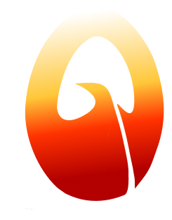

I create the future of user experiences for digital and physical products. I just want the things I build to get out of people's way — turning messy, complicated systems into things people can trust without thinking twice.
Strong at driving clarity in ambiguous situations — bringing structure to requirements and asking the right questions.
Sr. Software Development Manager @ AmazonImproved design consistency by aligning his work with broader design patterns and standards across the product.
Sr. Software Development Manager @ AmazonBridges complex engineering and human-centered design — turning novel tech and tight constraints into standardized design systems.
Product Engineer @ AtmoSpark TechnologiesHas a knack for collaborating with engineers and manufacturers so the design survives the development process.
Product Engineer @ AtmoSpark TechnologiesWhat stood out most was his ability to think beyond the immediate problem and push toward more impactful solutions — keeping the customer at the center.
Product Manager @ AmazonHis drive to improve stood out most — he quickly dove into Figma and explored how AI tools fit into our design workflow.
Sr. UX Designer @ AmazonDoesn't shy away from a challenge and is committed to expanding his skillset. His curiosity and adaptability stand out.
Sr. UX Designer @ AmazonA jack of all trades — willing to jump in, learn quickly, and contribute wherever the tech needs are.
Founder @ Worthy EndeavorsGreat energy and a strong desire to learn — even in a short tenure he did a great job for the team.
Founder @ Worthy EndeavorsBrings a strong balance of vision and execution. I'd highly recommend him to any team looking for a UX designer who thinks like a product leader.
Product Manager @ AmazonI read, write, compose music, play instruments, cook, and split my time between learning, exploring science exhibitions, and questioning how things work.
Whether tracking the arc of a sunrise, the cadence of a song, or the balance of a recipe, it all comes back to the same instinct noticing pattern, timing, and constraint, then making sense out of them. That is the exact instinct I bring to design.
More About Me →If you're solving something messy, complicated, or unclear — Bring me in and I will find a way out!